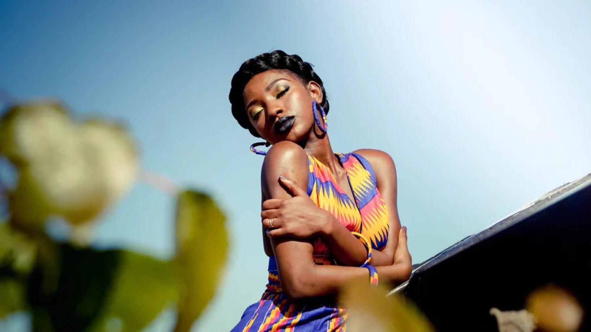

<ion-header>
  <ion-toolbar>
    <ion-buttons slot="start">
      <ion-menu-button></ion-menu-button>
    </ion-buttons>
    <ion-title class="ion-text-center">Marrying Yourself Journey - by Deva Joy Gouss</ion-title>
  </ion-toolbar>
</ion-header>
<ion-content [fullscreen]="true">
  <ion-grid>
    <ion-row class="ion-margin-right">
      <ion-col size="12" class="ion-padding ion-text-center">
        <h1>Module 01 - Welcoming and Embarking, Introduction to Deva Joy and the Journey</h1>
        
      </ion-col>
      <ion-col size="12" class="ion-margin ion-padding">
        <h2>A Welcoming Talk</h2>
      </ion-col>
      <ion-col size="12" class="ion-margin ion-padding">
        <h2>An Intro to Deva Joy Gouss and the Course</h2>
      </ion-col>
      <ion-col size="12" class="ion-margin ion-padding">
        <h2>Beautiful by Carole King<br>
          soul bird rise, ELEVATION</h2>
      </ion-col>
      <ion-col size="12" class="ion-padding-right ion-padding-left ion-text-center">
        <swiper [config]="config">
          <ng-template swiperSlide><div class="video-player" id="youtube-player1"></div></ng-template>
          <ng-template swiperSlide>Slide 2</ng-template>
          <ng-template swiperSlide>Slide 3</ng-template>
        </swiper>
      </ion-col>
      <ion-col size="12" class="ion-padding-right ion-padding-left ion-text-center">
        <h2>Goddess Code · LIZZY JEFF</h2>
        <div class="video-player" id="youtube-player1"></div>
      </ion-col>
      <ion-col size="12" class="ion-padding-right ion-padding-left ion-text-center">
        <h2>Aykanna Sings 'Beautiful Am I' at Sat Nam Fest</h2>
        <div class="video-player" id="youtube-player2"></div>
      </ion-col>
      <ion-col size="12" class="ion-padding-right ion-padding-left ion-text-center">
        <h2>Helen Reddy - I Am Woman (1971)</h2>
        <div class="video-player" id="youtube-player3"></div>
      </ion-col>
      <ion-col size="12" class="ion-margin ion-padding">
        <h2>Quote</h2>
      </ion-col>
      <ion-col size="12" class="ion-margin ion-padding">
        <h2>Journal Assignment - Writing in Class</h2>
      </ion-col>
      <ion-col size="12" class="ion-margin ion-padding">
        <h2>Journal - Love Notes to Myself</h2>
      </ion-col>
      <ion-col size="12" class="ion-padding-right ion-padding-left ion-text-center">
        <h2>Explaining the Mudra Flow</h2>
        <div class="video-player" id="youtube-player5"></div>
      </ion-col>
      <ion-col size="12" class="ion-padding-right ion-padding-left ion-text-center">
        <h2>Commitment to Mudra Flow</h2>
        <div class="video-player" id="youtube-player6"></div>
      </ion-col>
      <ion-col size="12" class="ion-padding-right ion-padding-left ion-text-center">
        <h2>Ted Talk</h2>
        <p>The Person you really need to marry - Tracy McMillian</p>
        <div class="video-player" id="youtube-player4"></div>
      </ion-col>
      <ion-col size="12" class="ion-padding-right ion-padding-left ion-text-center">
        <h2>Stop, Look, & Listen by Jana Stanfield</h2>
        <div class="video-player" id="youtube-player7"></div>
      </ion-col>
      <ion-col size="12" class="ion-text-center">
        <ion-button *ngIf="showIncompleteBtn" (click)="markComplete()">
          <ion-icon color="warning" name="square-outline"></ion-icon>&nbsp; You Have Not Completed This Module.
        </ion-button>
        <ion-button *ngIf="showCompleteBtn" (click)="markIncomplete()">
          <ion-icon color="success" name="checkbox-outline"></ion-icon>&nbsp; You Completed This Module!
        </ion-button>
      </ion-col>
    </ion-row>
  </ion-grid>
  <!-- navigation buttons-->
  <ion-footer>
    <ion-toolbar>
      <div class="ion-text-center">
        <ion-button [routerLink]="['/workshops/marrying-yourself']"
        routerDirection="back"><ion-icon name="arrow-back-circle-outline"></ion-icon>
        &nbsp; Introduction</ion-button>
          <ion-button [routerLink]="['/workshops/marrying-yourself/module02']"
        routerDirection="forward">Module 02 &nbsp;
        <ion-icon name="arrow-forward-circle-outline"></ion-icon></ion-button>
      </div>
    </ion-toolbar>
  </ion-footer>
</ion-content>
